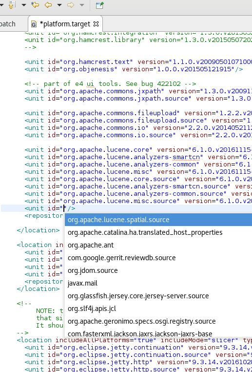

Instructions
The title should be short and snappy, written in sentence case, and using "headlinese" (compressed style). The title should not use trailing punctuation, and the <tr> XHTML element needs a unique id attribute (value is all-lowercase and hyphen-separated).
In the news description, tell users about changes they'll see in the UI. Tell component writers about changes they'll see at the client- and server-side APIs. Try to generate some excitement; save the boring details for the manual; be short and don't repeat yourself. The description should be complete sentences, with trailing punctuation.
Make the entry self-contained and mention API classes. Do not link to bugs and don't promote individuals or third-party products.
Use active voice (say "you", not "the user"), and follow other advice in the Topic Content section of the Eclipse Doc Style Guidelines.
Stick to the default font and size. Make command names (Quick Fix),
keyboard shortcuts (Ctrl+1), and preference page paths
(Preferences > General > Keys) bold (using <b>).
Avoid other emphasis markup, but prefer <b>
over <em> if you have to use one.
Do not enclose the first paragraph of an item in <p></p> tags.
See entries in published news documents for correct examples. These published news entries have been already reviewed, while entries in the evolving document may still contain errors.
The Windows Snipping Tool actually saves to PNG on Windows 7 and can easily be used to crop and save screenshots:
- Arrange the windows for the shot
- Use the Windows Snipping Tool to capture part of the screen
- Use File > Save As to save the screenshot as a PNG
- Overlays such as red circles or boxes to call out details can be done using Microsoft Paint
Name the file in a way that is appropriate and specific to the item (e.g., key-bindings.png, rather than something generic like image.png). Use all lowercase letters in the image file name, including the ".png" file extension. As a separator, use hyphen "-" rather than underscore "_". The item's id is often a good choice for an image name.
Put all the images in a sibling directory named "images".
This gives XHTML like:
<img src="images/foo-view.png" alt=""/>
Include a suitable alt attribute.
The alt text should be empty ("") if the image just illustrates the text.
Only use the alt text to add information that is not accessible if the page is rendered without images.
Don't write alt="Screenshot of the XY dialog".
Blind users shouldn't have to skip useless repetitions, but e.g. a field label can be
interesting unless it's already part of the description.
If the alt attribute text cannot sufficiently replace the image contents
(e.g. for a screenshot that shows source code), then enclose the img element in a link
to a plain ".txt" file with the same name as the image:
<a href="images/foo-view.txt"><img ...
The images should be left-justified (as opposed to centered). Do not embed the width and height of the image.


IDynamicReferenceProvider. This replaces the
IProjectDescription.setDynamicReferences API which is now deprecated.


- 'Wait for console output (regexp)' post launch action: Allows to delay further processing of launch group elements until a certain output (matching a regular expression) appears on the console of the given group element
- 'Adopt launch if already running': Allows to control behaviour of the group when the launch configuration referenced by the launch group element is already running (no matter who launched it). If checked, the launch configuration will not be launched again if it is running already. The existing launch will be adopted by the group (i.e. terminating the group will also terminate this launch). Any configured post launch action will still be executed!




org.eclipse.core.runtime.ListenerList
now overrides Java 8 default method Iterable.spliterator() and provides stream() and parallelStream()
methods. Thus it exposes Java 8 types in public API. This is a source-incompatible change that require all plug-ins using
ListenerList to have a minimum BREE set to Java 8 if they want to properly compile against Oxygen and forthcoming
versions (i.e. versions in the [3.9,4.0) range).
The typical compile error indicating that you should change your BREE is
The type java.util.stream.Stream cannot be resolved. It is indirectly referenced from required .class files.
Note that this change is only required when using org.eclipse.core.runtime.ListenerList. However, now that some Java 8 types are being
exposed in the public API, similar changes may be done in other API types. Thus it will require BREE change in plug-ins using these types.
org.eclipse.equinox.common within
the [3.0,4.0) range will continue to work as before.
org.eclipse.jface.text.contentassist.AsyncContentAssistant
was added as an alternative to the usual org.eclipse.jface.text.contentassist.ContentAssistant. The AsyncContentAssist triggers
computation of completion proposal in background and doesn't block the thread invoking the completion. As a result, it will prevent the UI thread to freeze
when a completion proposal computer takes too long.
This supports the same API and methods as the usual ContentAssist, so shifting from synchronous/blocking ContentAssistant to asynchronous one only requires
instantiating the AsyncContentAssistant in place of the ContentAssistant. Note that as the computation now happens in background, the IContentAssistProcessor
attached to an AsyncContentAssistant needs to NOT require UI Thread; any IContentAssistProcessor computer requiring the UI Thread will need to be modified
in order to be used with AsyncContentAssistant. The AsyncContentAssistant also provides a way to directly add multiple IContentAssistProcessors to the content assistant.
The generic and extensible editor has been switched to use this AsyncContentAssistant.